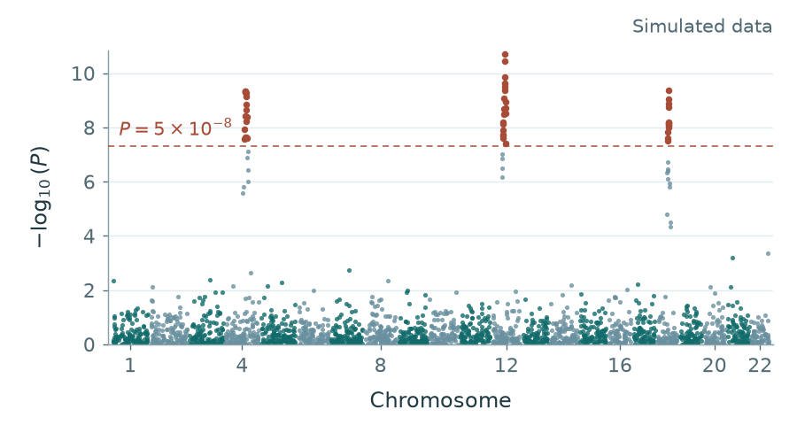
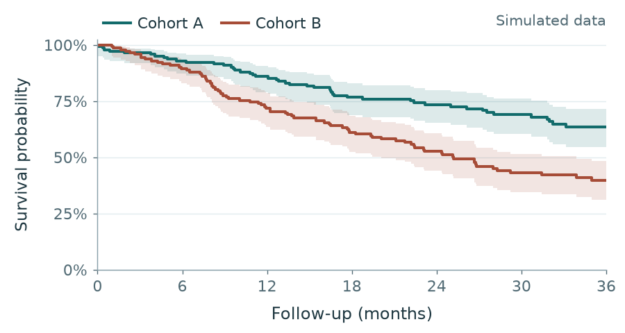

Statistical genetics
Development of statistical and computational methods for analyzing high-dimensional genetic and genomic data
SoftwareThe work spans methods for genetic and genomic data, variable selection and clinical research.

Development of statistical and computational methods for analyzing high-dimensional genetic and genomic data
Software
Development and application of statistical methods for variable selection and clinical research
Publications